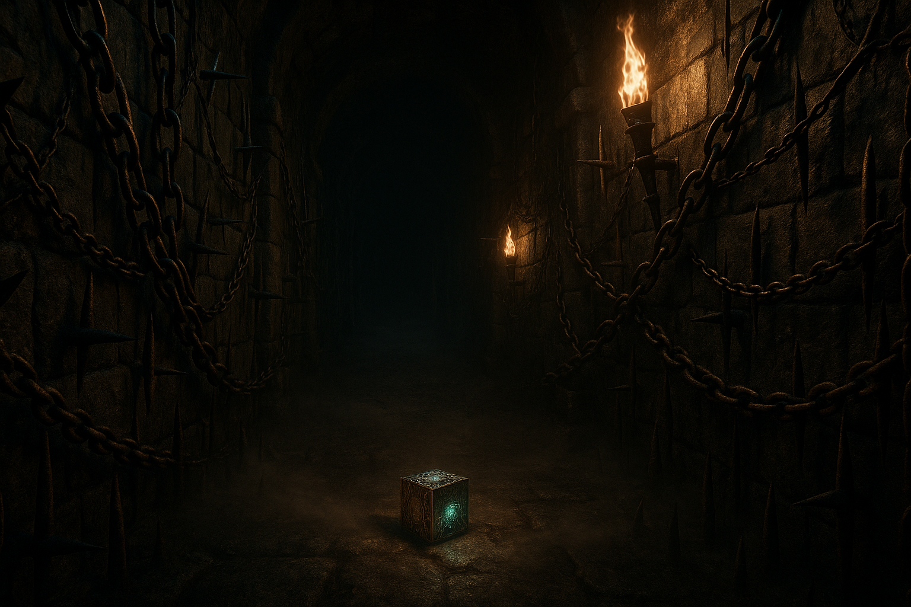

1位

Clive Barker's Hellraiser: Revival
ホラー界の巨匠クライヴ・バーカーが直接ストーリー制作に関与した、Hellraiserフランチャイズ初のビデオゲーム化作品。プレイヤーは主人公エイダン・リンチとなり、謎のパズルボックス「ジェネシス・コンフィギュレーション」の力を駆使しながら、恐怖の異次元ラビリンスに囚われた恋人サニーを救出する一人称視点のサバイバルホラー。ピンヘッドをはじめとするセノバイトたちとの戦闘や謎解き、リソース管理が組み合わさった深みのあるゲームプレイが魅力。
おすすめ理由：Steamレビューで95%以上の「圧倒的に好評」を獲得。伝説的ホラーIPが最新技術で蘇った2026年10月最大のダークホース。